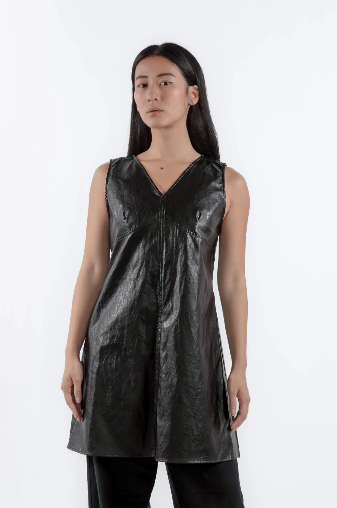
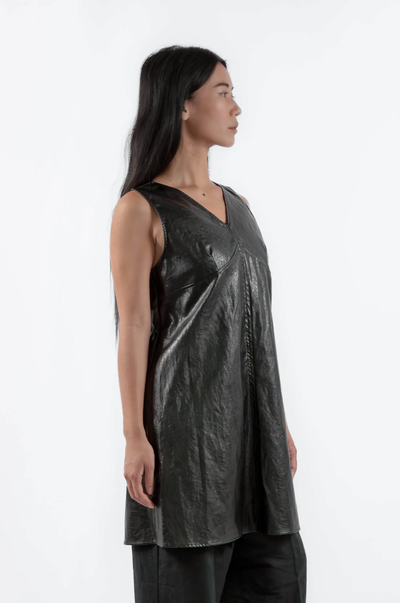
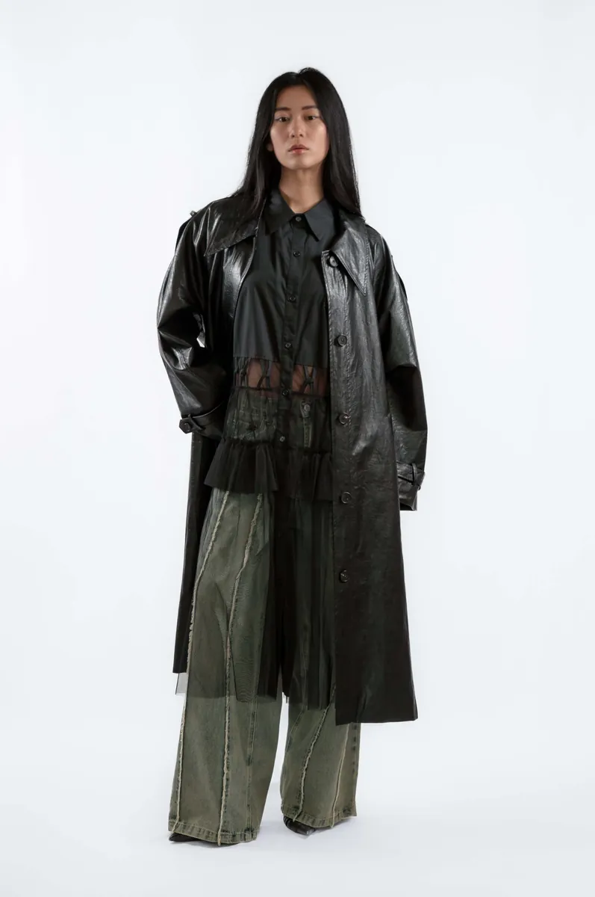
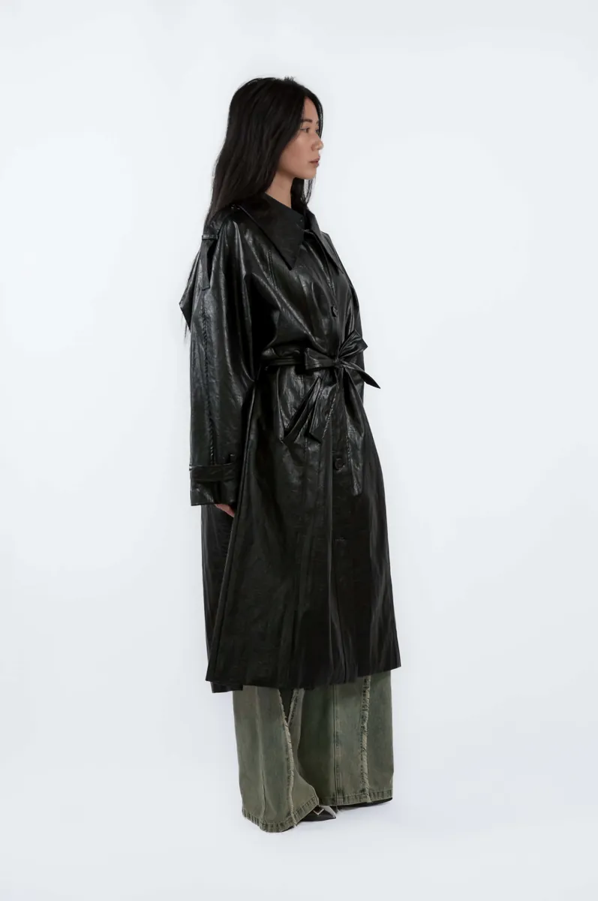
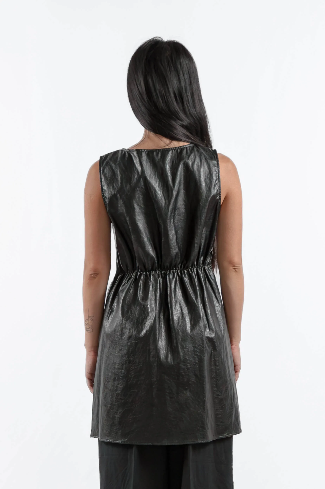

Vegan Leather Fashion: What to Know Before You Buy
Vegan leather has moved well past its early reputation for cheap-looking PVC. The category now includes materials that are genuinely hard to distinguish from animal leather, and in some cases, more interesting to wear. Here's what to know before buying.
Vegan leather fashion in 2026: what it is, how to spot quality, how to style it, and where to buy it in the EU.

What vegan leather actually is
Vegan leather is any non-animal material engineered to replicate the look, texture, and drape of leather. The most common types: PU (polyurethane), which is the standard; PVC, which is the cheapest and least convincing; and newer plant-based alternatives like Piñatex (pineapple fibre) and Mylo (mycelium).
For fashion purposes, PU is the dominant material. Quality PU leather, especially when used in structured garments like trench coats or dresses, is durable, weather-resistant, and maintains its shape over time.

How to tell good vegan leather from bad
The surface should be consistent without looking plasticky. Run your hand across it: good vegan leather has a slight give, not rigidity. Check the edges and seams: well-made vegan leather garments have clean finishes that don't peel or fray at the cut edges.
Weight matters too. A vegan leather trench coat should have enough substance to drape properly. If it feels like a rain mac, it probably is one.
How to style vegan leather in 2026
The key is contrast of texture. Vegan leather has a sheen; pair it with matte fabrics to stop the outfit reading as one-note. A glossy trench over a matte linen shirt and wide leg trousers. A vegan leather dress with a soft knit layer underneath for warmth and texture contrast.

Avoid pairing vegan leather with other shiny fabrics: satin, silk, or metallic knits. The competing sheens flatten the look and remove the contrast that makes the material interesting.
Where to buy vegan leather fashion in the EU
Most Korean independent labels working with vegan leather are not stocked in European retail. The options are: buy direct from Seoul (international shipping, customs fees, complicated returns) or find a European curator.
einHaru stocks vegan leather pieces from Korean independent designers and ships EU-wide from Berlin: no customs fees, 14-day returns under EU consumer law, and full sizing guidance in English and German.
Vegan leather pieces from einHaru

Glossy Vegan Leather Trench Coat in Black
A modern trench in glossy PU leather. Elongated silhouette, structured collar, flexible enough for daily use. Weather-resistant without looking like outerwear. Made in Korea.
View product
Vegan Leather V-Neck Sleeveless Dress in Black
A sleek sleeveless midi in smooth vegan leather. V-neckline, minimal silhouette, works for day and evening. The piece that makes the category worth taking seriously.
View productContinue reading: What Is Quiet Luxury Fashion or Korean Minimalist Fashion: A Guide.